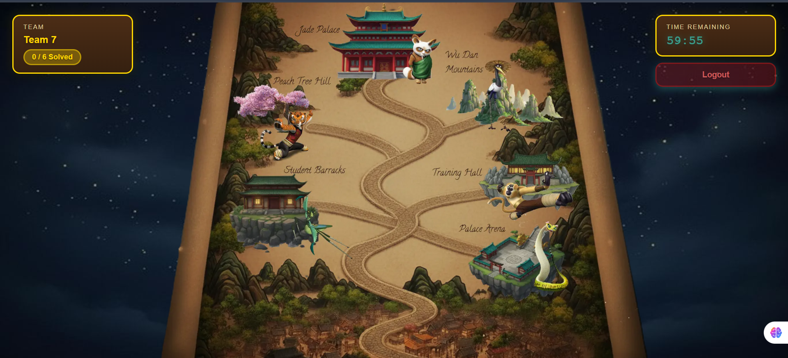
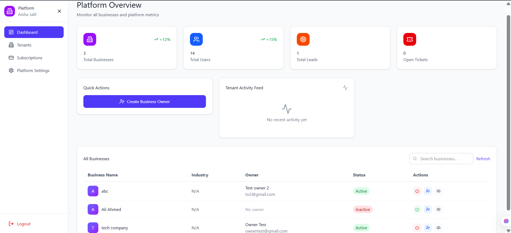
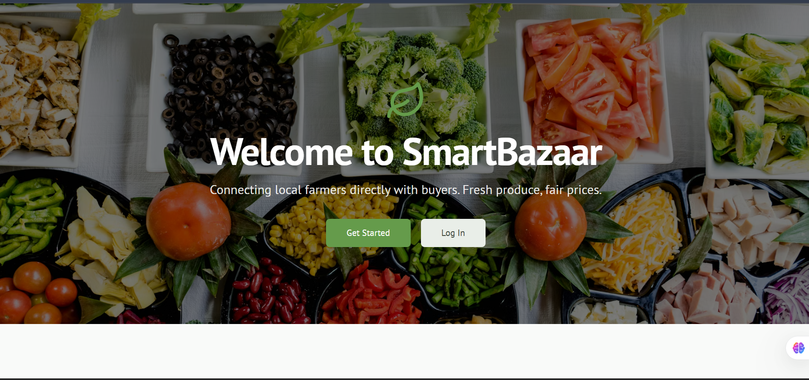
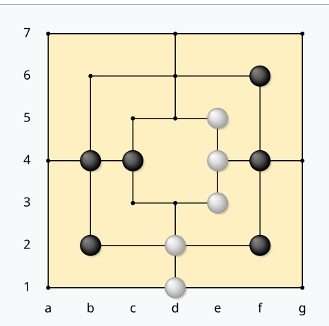
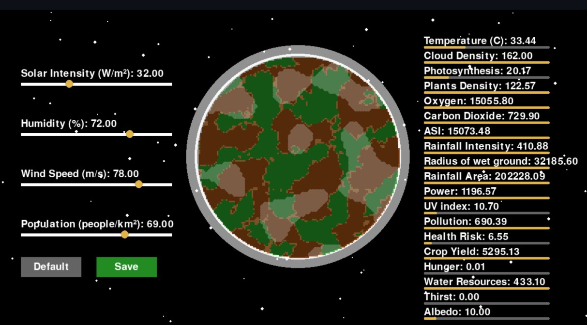
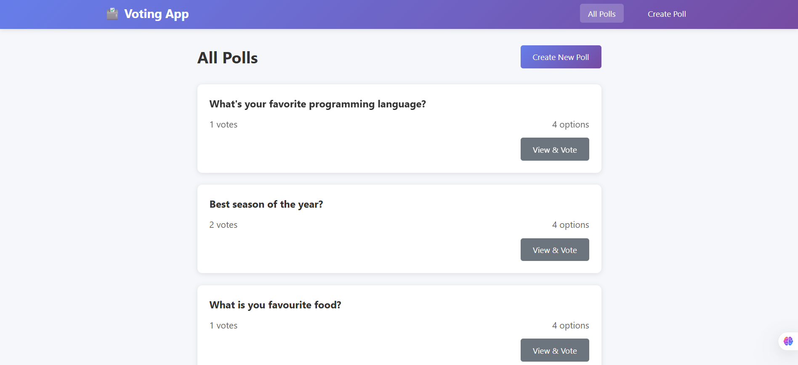
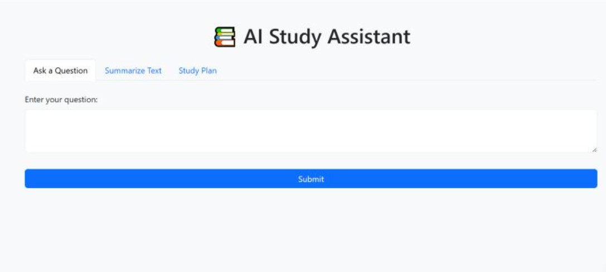
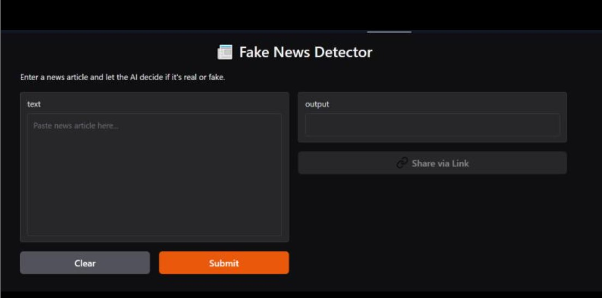
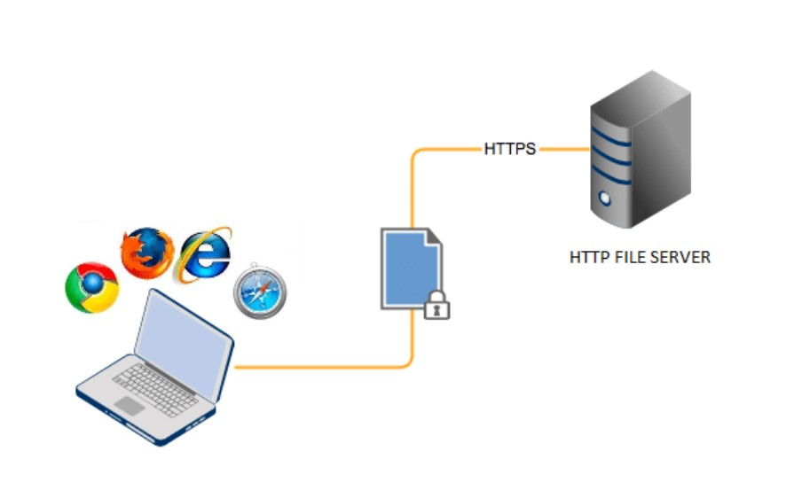

Backend-first work across multi-tenant SaaS, microservices, AI systems, and real-time platforms.


Full-stack multi-tenant CRM designed as a SaaS platform with RESTful APIs, JWT authentication, and role-based access control. Built workflows for customers, leads, and deals with analytics dashboards.


An AI-driven implementation of Nine Men's Morris using the Minimax algorithm with Alpha-Beta Pruning, custom heuristics, and a Pygame-based GUI.


Full-stack voting system featuring real-time polls, RESTful services, and a responsive UI with progress visualizations for election/survey use cases.

AI-powered study companion that helps students organize notes, generate quizzes, and track learning progress through an intelligent interface.

A C++ project implementing AVL trees, graphs, heaps, and hash tables for efficient order processing and route optimization using Dijkstra's algorithm.

A command-line HTTP server built using Python's http.server module to handle GET & POST requests, URL rewriting, and dynamic responses.